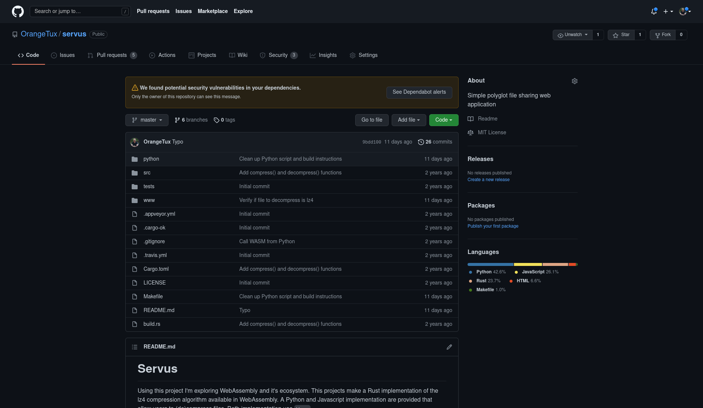

class: inverse layout: true --- class: center, middle # Servus WebAssembly! .footnote[by [Auke Oosterhoff](github.com/orangetux)] ??? * Explain Servus, --- class: center, middle # About me <a href="github.com/orangetux">github.com/orangetux<a> <br /> <a href="mailto:auke@orangetux.nl">auke@orangetux.nl</a> --- class: middle # Agenda * What is WebAssembly? * WebAssembly and Python (and Rust and Javascript) * The future of WebAssembly --- class: center, middle # What is WebAssembly? ??? - What is the **RELEVANCE** of Wasm? --- class: center, middle # What is WebAssembly? "WebAssembly (abbreviated Wasm) is a binary instruction format for a stack-based virtual machine."<sup>[1]</sup> ??? - Instruction set: API for CPUs - Virtual machine: Wasm is not executud on CPU - Virtual machine provides a sandbox executed environment --- class: middle # What is WebAssembly? ```assembly add: # @add global.get __stack_pointer local.set 2 i32.const 16 local.set 3 local.get 2 local.get 3 i32.sub local.set 4 local.get 4 local.get 0 i32.store 12 local.get 4 local.get 1 i32.store 8 local.get 4 ... ``` ??? But, you don't write Wasm. --- class: center, middle # What is WebAssembly? "Wasm is designed as a portable compilation target for programming languages."<sup>[1]</sup> --- class: center, middle # What is WebAssembly? Picture by [Lin Clark](https://hacks.mozilla.org/2017/02/a-crash-course-in-assembly/) ??? * Wasm is designed in such way, it's easy to compile a static typed language to Wasm. * IR stands for **Intermediate Representation**. * Lin Clark * Wasm VM executes code on x86 and ARM --- class: center, middle # What is WebAssembly? "[Wasm is designed to]" as a portable compilation target for programming languages, enabling deployment on the web for client and server applications. ??? * In other words - Wasm just a binary instruction set for a conceptual CPU. --- class: left # Some examples ??? - By going over a set of examples I'll show some off Wasm **strengths**. - Wasm is more used that you might think --- class: center, middle # Some examples <a href="web.dev/ps-on-the-web" target="_blank">web.dev/ps-on-the-web</a> ??? - Photoshop is an **image editing tool**. - image editing is a CPU and GPU intensive job. - Javascript is relatively slow, - Interpreted - Highly dynamic Optimizations like JIT provide non-deterministic preformance Reuse of existing C++ code base --- class: center, middle # Some examples <a href="https://pyodide.org/en/latest/console.html" target="_blank"> </a> <a href="pyodide.org" target="_blank">Pyodide</a> ??? - **CPython** compiled to Wasm - Some **binary packages** also compiled to Wasm --- class: center, middle # Some examples <a href="https://ffmpegwasm.netlify.app/#demo" target="_blank">ffmpeg</a> --- class: center, middle # Some examples <a href="https://github.com/github/copilot.vim/tree/release/copilot/dist">Neovim plugin for Github's CoPilot</a> --- # WebAssembly's strengths * Near native performance -- * Use components of different programming domains -- * Portability ??? Use one Wasm binary on multiple architectures -- * Sandboxed execution environment ??? The Wasm VM provides sandbox --- # WebAssembly's (current) weaknesses * Current standard is Minimal Viable Product (MVP) -- * Currently only 4 supported data types: * int32 * float32 * int64 * float64 -- * Current development primarily focuses web ??? * Ecosystem is focused on web --- # WebAssembly in action ??? * Compression/Decompression written in Rust * Use Wasm in the browser * Use Wasm in in Python --- class: center, middle # WebAssembly in action  <a href="github.com/orangetux/servus" target="_blank">github.com/orangetux/servus</a> --- # WebAssembly in action ``` line-numbers // imports skipped for brevity. #[no_mangle] #[wasm_bindgen] /// Compress given input using LZ4. pub extern fn compress(input: Vec<u8>) -> Vec<u8> { use lz4_compression::compress::compress as _compress; return _compress(&input); } ``` ??? * Here we use high level type `Vec` (similar to list in PYthon) * wasm_bindgen generates glue code for javascript -- ``` line-numbers #[no_mangle] #[wasm_bindgen] /// Decompress given input using LZ4. pub extern fn decompress(input: Vec<u8>) -> Vec<u8> { use lz4_compression::decompress::decompress as _decompress; return _decompress(&input).unwrap(); } ``` --- # WebAssembly in action <video autostart=false height="450" controls /> <source src="video/lz4-js-recording.mp4" /> </video> ??? * Demo of a web app that provides 2 file uploads to compress and decompress file using lz4. --- # WebAssembly in action ``` line-numbers import * as wasm from 'servus' async function compressFile () { const file = this.files[0] // Read content of a file... let decompressed = await file.text() // ... and turn it into a Uint8Array. decompressed = new TextEncoder().encode(decompressed) // Compress the file... const compressed = wasm.compress(decompressed) download(compressed, `${file.name}.lz4`, 'application/octect-stream') } document.getElementById('compress') .addEventListener('change', compressFile, false) ``` ??? * Line 10: data is passed to the glue code * Glue code provide nice developer experience --- class: center, middle # WebAssembly in action <br /> <a href="wasmer.io" target="_blank">wasmer.io</a> as Wasm VM --- # WebAssembly in action <video autostart=false height="450" controls /> <source src="video/lz4-py-recording.mp4" /> </video> --- # WebAssembly in action ``` line-numbers import os import sys from wasmer import engine, Store, Module, Instance from wasmer_compiler_cranelift import Compiler __dir__ = os.path.dirname(os.path.realpath(__file__)) file = "/pkg/servus_bg.wasm" store = Store(engine.JIT(Compiler)) wasm_bytes = open(__dir__ + file, "rb").read() module = Module(store, wasm_bytes) wasm = Instance(module) ``` ??? Some boiler plate required to instantiate VM and load wasm binary --- # WebAssembly in action ``` line-numbers def compress_file(path: str): """ Compress file at given file path using lz4. """ with open(input, "rb") as f: data: bytes = f.read() compressed_data: bytes = compress(data) output = f"{path}.lz4" with open(output, "wb+") as f: f.write(compressed_data) print( f"Compressed {path} ({len(data)} bytes) to {output} ({len(compressed_data)} bytes), reduction of {100 - int((len(compressed_data) / len(data)) * 100)}%." ) ``` --- # WebAssembly in action ``` line-numbers def compress(data: bytes) -> bytes: """Compress the given bytes using L4Z.""" offset = allocate(data) # The rest of function omitted. ... ``` ??? - Function is longer, I'll show in a minute --- # WebAssembly in action ``` line-numbers def allocate(data: bytes) -> int: """Allocate the given bytes in Wasm memory.""" length = len(data) # Use the memory allocator from wasm-bindgen to allocate some memory. offset = servus.exports.__wbindgen_malloc(length) for i, c in enumerate(data): servus.exports.memory.uint8_view()[offset + i] = c return offset ``` ??? - Here is first Wasm call - We request Wasm VM to allocate some memory for us --- class: center, middle # WebAssembly in action <br /> Picture by [Lin Clark](https://hacks.mozilla.org/2017/07/memory-in-webassembly-and-why-its-safer-than-you-think/) --- # WebAssembly in action ``` line-numbers def compress(data: bytes) -> bytes: """Compress the given bytes using L4Z.""" offset = allocate(data) length = len(data) servus.exports.compress(8, offset, length) mem = servus.exports.memory.uint32_view() offset = mem[2] length = mem[3] mem = servus.exports.memory.uint8_view() data = mem[offset : offset + length] free(offset, length) return bytes(data) ``` ??? * Line 6 - calls to Wasm, passing data that tells Wasm VM where to find the input data - Remember, Currently, the official wasm specification only works with numbers * Line 8-10, reads the where in memory, the compressed data is stored * Line 14: Copies the compressed data to the Python world * Line 15: clears the Wasm memory * decompress() follows a similar approach * We've to do this manual work, because compiler doesn't create Python glue code * It will get better --- class: center, middle # The future of WebAssembly <img src="img/post-wasm.png" width="100%" alt="Future of Wasm"> Picture by [Lin Clark](https://hacks.mozilla.org/2017/02/a-crash-course-in-assembly/) ??? * Interface types: adds high level types * Threading * Wasm system interface: creating an interface to interact with host sytem. --- # Useful links 1. https://webassembly.org/ 2. https://wasmer.io 3. https://bytecodealliance.org/ 2. https://hacks.mozilla.org/ 6. https://fitzgeraldnick.com/2020/08/27/reference-types-in-wasmtime.html 7. https://mbebenita.github.io/WasmExplorer/ 8. https://rustwasm.github.io/docs/book/ 9. https://www.youtube.com/watch?v=B-ign0dW51o 10. https://github.com/orangetux/servus 11. https://github.com/orangetux/pygrunn-talk --- class: center, middle # Danke [1]: https://webassembly.org/